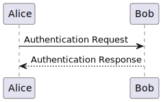

Please note that starting with version 2.0.0 the taglet works with the API introduced in Java 9. It has been tested with Java-11.
Simply use the @plantUml tag to generate the graphics file from the
PlantUML source1:
/**
* Description.
*
* <img src="example.svg">
*
* This package/class ...
*
* @plantUml example.svg
* Alice -> Bob: Authentication Request
* Alice <-- Bob: Authentication Response
*
*/
This is rendered as:
Description.

This package/class …
The usage of “<” and “>” in PlantUML make javadoc complain about
illegal HTML tokens. Of course, you could use “<” and “>” but
this reduces the readability of the UML descriptions and is therefore
not supported (the taglet does not scan for these sequences and convert
them). You could globally disable HTML checks with e.g. “-Xdoclint:-html”
when using PlantUML but this might prevent other problems from being detected.
The preferred approach is to put the PlantUML source in comments as shown below.
/**
* @plantUml package.svg
* <!--
* Bob <-- Alice: Authentication Request
* Alice <-- Bob: Authentication Response
* -->
*/
The taglet removes the comment delimiters and uses the resulting content
as PlantUML source. Of course, you also have to avoid all “-->” arrows in
your PlantUML description as this would terminate the HTML comment
prematurely. Luckily, this isn’t too hard because you can always exchange
the left and right side of such a relation.
It’s also possible to use @startuml and @enduml instead of @plantuml,
which is the common usage pattern. @startuml is simply a synonym for
@plantUml and @enduml will be ignored entirely. Use this for
compatibility with other tools, like e.g. the
PlantUML Eclipse Plugin or the
PlantUML IDEA Plugin.
Invoking
Gradle
Configuring a taglet in the javadoc task is not explicitly shown in the DSL Reference. The required properties can be found in the standard otions
Here’s an example:
configurations {
javadocTaglets
}
dependencies {
javadocTaglets "org.jdrupes.taglets:plantuml-taglet:<version>"
}
javadoc {
options.tagletPath = configurations.javadocTaglets.files as List
options.taglets = ["org.jdrupes.taglets.plantUml.Taglet"]
...
}
The latest version available on maven central is shown in the badge at the beginning of this page.
Command line
Specify the taglet on JavaDoc’s command line:
javadoc -taglet org.jdrupes.taglets.plantUml.Taglet -tagletpath /path/to/plantuml-taglet.jar:/path/to/plantuml.jar
This could be simplified by providing a “fat jar”, but I doubt that anybody would really use it.
Maven
Still using this? Well, you’re on your own…
Notes
This taglet is released under the GPL 3.0.
The project’s sources can be found on GitHub.
-
The PlantUML source for the example above is actually in the package description instead of the overview source file. Java-11 to Java-15 (at least) drop block tags from an overview file. (Used to worked in Java-8.) See the report in the Java Bug Database
↩
| Package | Description |
|---|---|
| org.jdrupes.taglets.plantUml |
The main package.
|